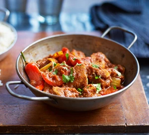

CHICKEN JALFREZI

Description
Stir through small pack of coriander and serve with rice, naan and a big dollop of mango chutney.
Ingredients
For the sauce
- 1/2large onion, roughly chopped
- 2 garlic cloves, chopped
- 1 green chilli, finely chopped
- vegetable oil, for frying
- 400g can plum tomatoes
- 1 tbsp ground coriander
- 1 tbsp ground cumin
- 1 tsp turmeric
For the meat & veg
- 2-3 chicken breasts, diced
- 1 tsp ground cumin
- 1 tsp ground coriander
- 1 tsp turmeric
- 1/2 large onion, sliced
- 2 red chillies, finely chopped (optional)
- 2 tsp garam masala
- handful of fresh, chopped coriander leaves
- cooked basmati rice or naan bread to serve